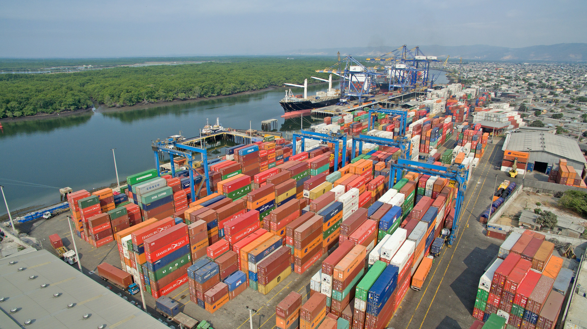

Alinear la oferta de educación técnica, tecnológica y de formación superior con los requerimientos de la matriz productiva, institucionalizando la formación dual y los esquemas de pasantías para garantizar la inserción laboral efectiva y la pertinencia del talento calificado.
Pilar
Competitividad
Pilar 3:
Formalización laboral, infraestructura, innovación y coordinación público-privada como núcleo operativo de la Agenda.

Fundamento del pilar
El documento describe a este pilar como el núcleo operativo de la Agenda. Aborda los factores que, según el análisis, determinan si producir en el Ecuador resulta competitivo o costoso: productividad, costos estructurales, infraestructura, regulación, logística, innovación y articulación entre políticas públicas y decisiones privadas.
Lineamientos
Cómo se aterriza este pilar
21 lineamientos, organizados en 3 ejes
El documento identifica dos desafíos del mercado laboral ecuatoriano con incidencia directa en el crecimiento: la persistencia de la informalidad, que impide la acumulación de capacidad productiva endógena, y la desconexión entre los sistemas de formación y las necesidades reales de la matriz productiva.
Consolidar el sistema nacional de certificación de competencias laborales para reconocer formalmente la experiencia práctica de los trabajadores, potenciando su movilidad e inclusión en el mercado formal.
Desarrollar condiciones habilitantes de bienestar, inclusión y seguridad laboral para consolidar el empleo adecuado y la atracción y retención del talento humano.
Impulsar programas de capacitación continua, especialización técnica y asistencia integral para mejorar la productividad en el empleo formal, reducir brechas de habilidades y potenciar el talento humano.
Fortalecer la previsibilidad, protección social y eficiencia administrativa del entorno laboral formal, mediante la actualización participativa de sus esquemas y procesos, para consolidar el empleo formal y la inversión productiva.
Promover la diversificación de modalidades contractuales adaptadas a las dinámicas de los sectores productivos para fomentar la sostenibilidad del empleo formal.
Según cifras que la Agenda recoge de la Asociación Logística del Ecuador, las empresas nacionales destinan USD 17,9 de cada USD 100 en ventas a costos logísticos —uno de los porcentajes más altos de América Latina— y hasta USD 26,4 en las empresas de menor tamaño. El documento plantea que movilizar inversión hacia infraestructura y conectividad es una decisión estratégica con retornos en la competitividad del conjunto de la economía.
Desarrollar corredores estratégicos multimodales e infraestructura habilitante (vial, portuaria, aérea, energética y de telecomunicaciones) para potenciar la conectividad territorial y la logística especializada y productiva.
Desplegar conectividad digital y de telecomunicaciones de alta calidad para la inserción eficiente de micro, pequeñas y medianas empresas en mercados globales.
Fortalecer las condiciones operativas de la red vial mediante esquemas eficientes de mantenimiento permanente para asegurar el flujo logístico productivo.
Modernizar el sistema aduanero y de comercio exterior mediante la digitalización y gestión de riesgos, optimizando tiempos, costos y seguridad institucional.
Modernizar y diversificar la infraestructura energética para maximizar el valor agregado, optimizar la eficiencia operativa y acelerar la transición energética.
El documento sostiene que competir globalmente exige operar con estándares internacionales, incorporar innovación sistemática e integrarse en cadenas de valor. Según la Agenda, la sostenibilidad de ese salto competitivo depende de un entorno que conecte al sector público, la empresa privada, la academia y la sociedad civil en mecanismos permanentes de diálogo y co-creación.
Consolidar el ecosistema nacional de Investigación, Desarrollo e Innovación (I+D+i) para dinamizar la transformación productiva y competitiva del país.
Fomentar la competitividad global mediante la adopción de estándares internacionales y la certificación técnica de operaciones sostenibles en los sectores estratégicos y productivos.
Fortalecer el ordenamiento técnico y la seguridad del territorio productivo para mitigar conflictos socioambientales y contrarrestar actividades ilícitas.
Fortalecer la gobernanza para consolidar entornos de transparencia, seguridad jurídica, sostenibilidad y eficiencia que dinamicen la competitividad y potencien alianzas estratégicas en los sectores productivos.
Fortalecer la infraestructura estadística y los sistemas de información para elevar la competitividad, previsibilidad y sostenibilidad de los sectores productivos.
Fortalecer la inserción internacional y optimizar el régimen de comercio exterior para promover la competitividad exportadora.
Impulsar la asociatividad empresarial, el cooperativismo y los encadenamientos productivos locales.
Impulsar la productividad sistémica y la competitividad de los sectores productivos enfocado en la generación de condiciones habilitantes para la estabilidad y sostenibilidad de la producción nacional.
Posicionar al Ecuador como destino turístico y productivo de alto valor, institucionalizando la Marca País con productos de exportación y promoviendo experiencias agroturísticas.
Optimizar la eficiencia operativa mediante la simplificación integral, digitalización e interoperabilidad de trámites administrativos para dinamizar la competitividad y potenciar el desarrollo productivo nacional.